Prévia para aprovação · nova loja virtual
Uma loja feita para quem compra balança: com ficha técnica, assistência e nota fiscal. E ligada ao estoque, aos pedidos e ao financeiro da Porto, num sistema só.
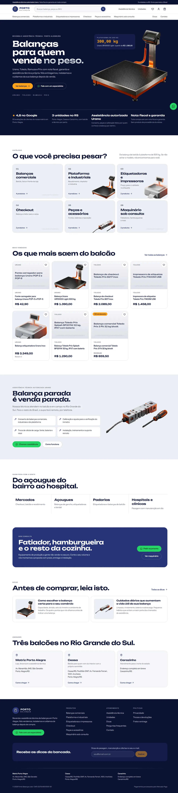
01 · Vitrine
Filtro por capacidade, Inmetro e voltagem, busca que entende "balança de açougue", e uma página de produto com tudo que um comprador de empresa pergunta antes de fechar.
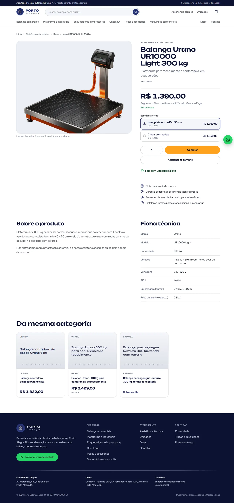
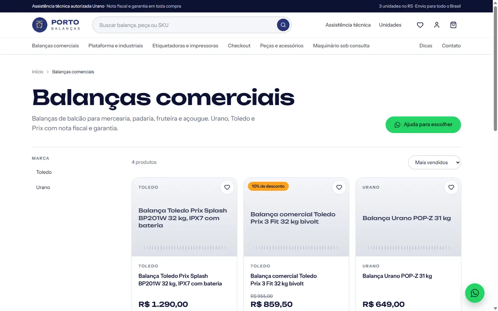
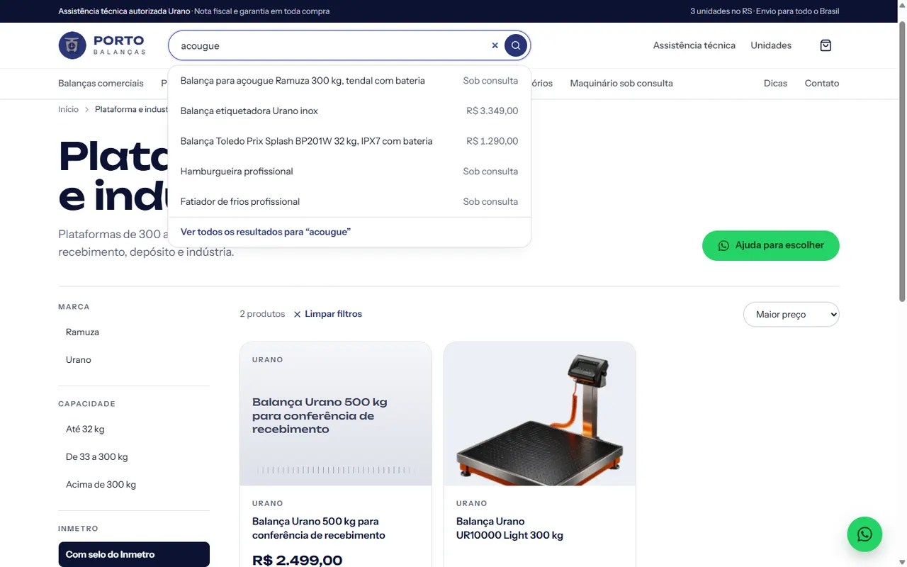
02 · Compra
Cupom, frete pelos Correios e Jadlog, retirada grátis nas unidades e a instalação remota como opção no fechamento. Pix, cartão e boleto pelo Mercado Pago.
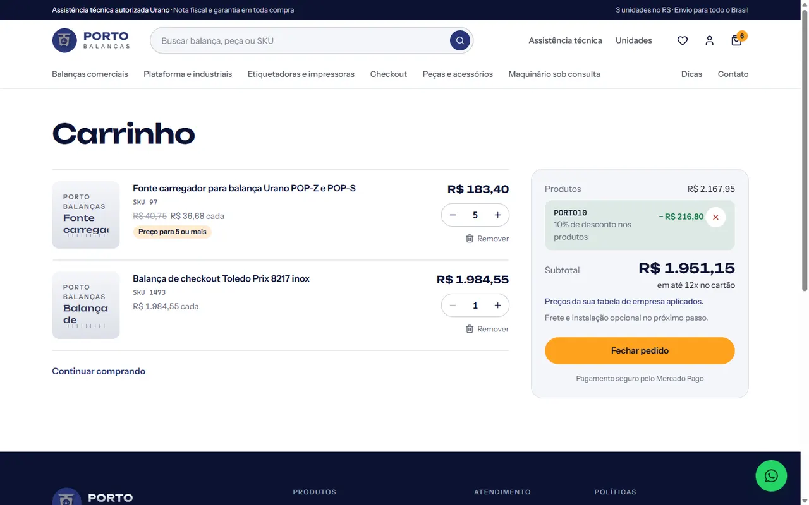
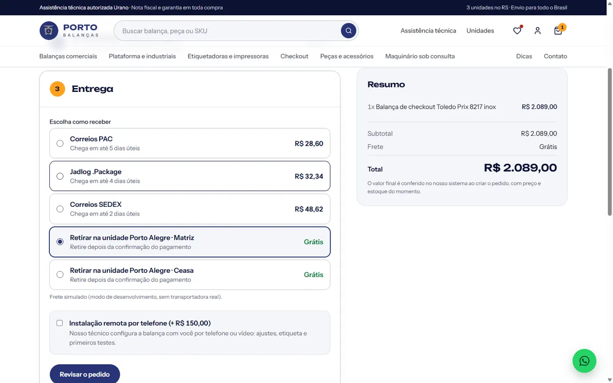
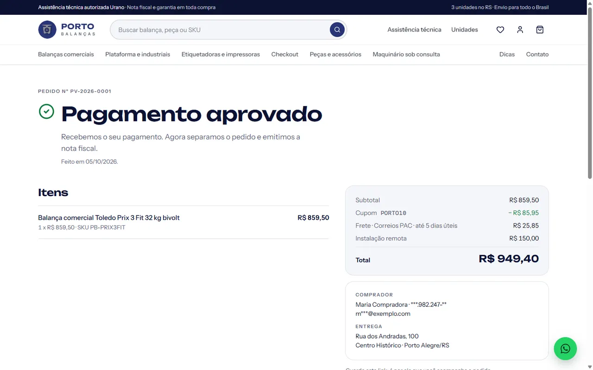
03 · No celular
É onde o dono do mercado pesquisa. Tudo funciona com uma mão só.

Início
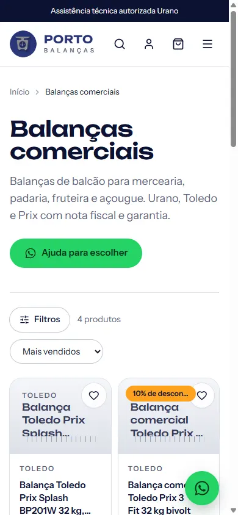
Categoria
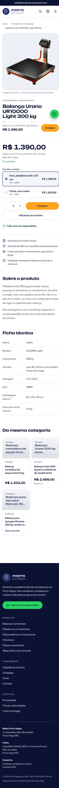
Produto
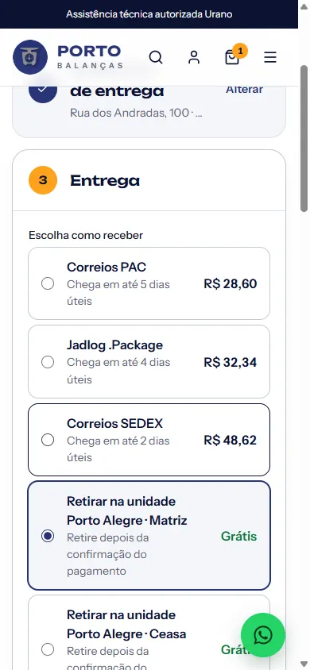
Entrega
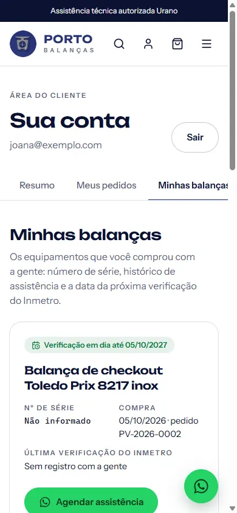
Minhas balanças
04 · O que plataforma pronta não faz
Isso só existe porque a loja nasce dentro do sistema da Porto.
O cliente vê as balanças que comprou, o número de série e quando vence a verificação do Inmetro. A Porto avisa antes.
Cliente aprovado compra no boleto a prazo, com limite de crédito e tabela de preço própria.
A loja mostra o que tem em cada unidade. Vendeu no site, baixa no sistema. Sem vender o que não tem.
"Retire hoje na Ceasa", sem frete, para quem vem do interior.
Maquinário e produto sem estoque viram conversa, com o produto já escrito na mensagem.
O cliente do Brasil todo contrata a configuração por telefone no fechamento do pedido.
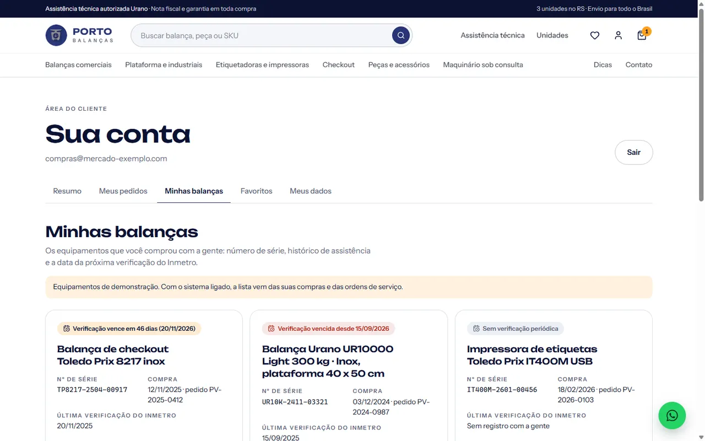
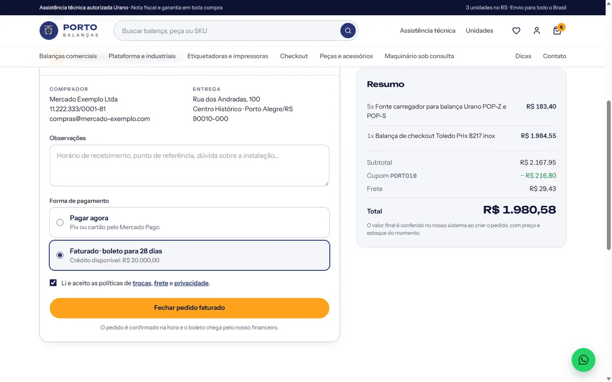
05 · Por trás da loja
Produtos, fotos, preços, promoções, cupons, pedidos, clientes de empresa, contatos e números de venda, no mesmo lugar do estoque e do financeiro.
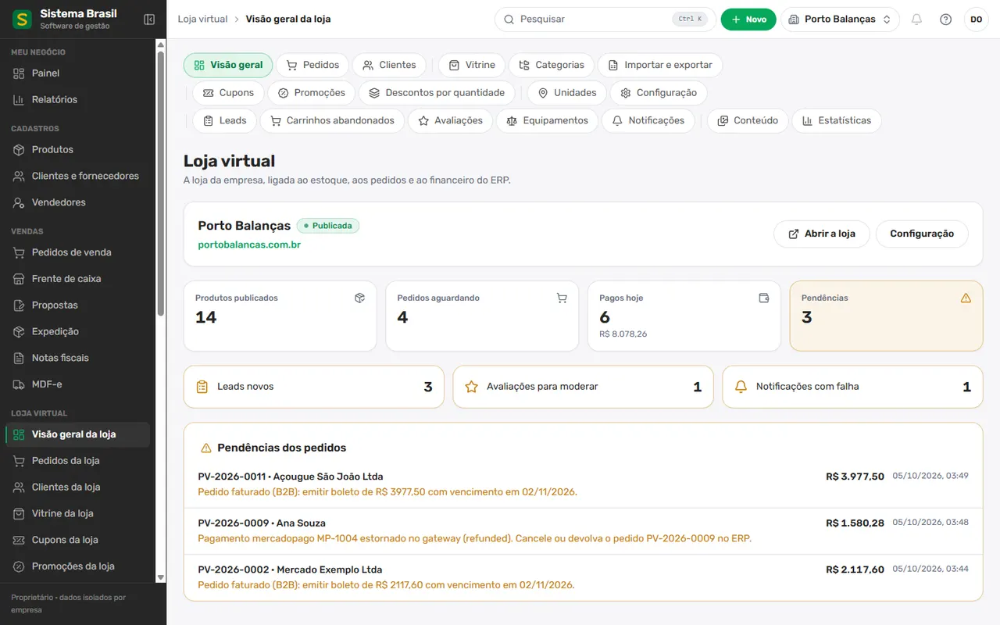
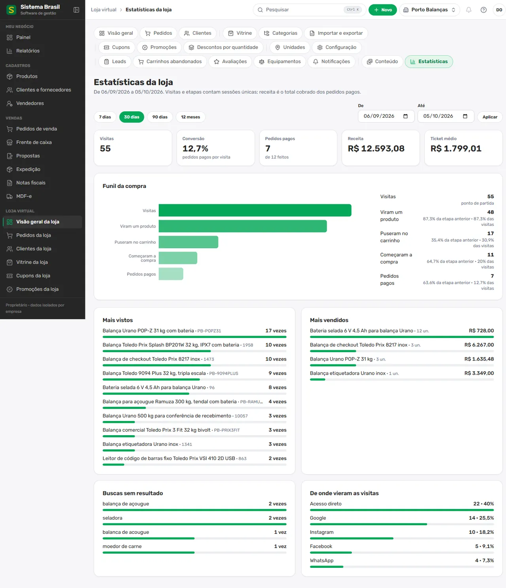
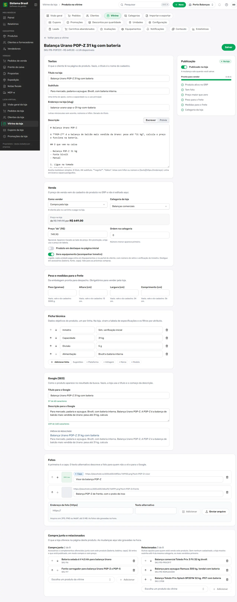
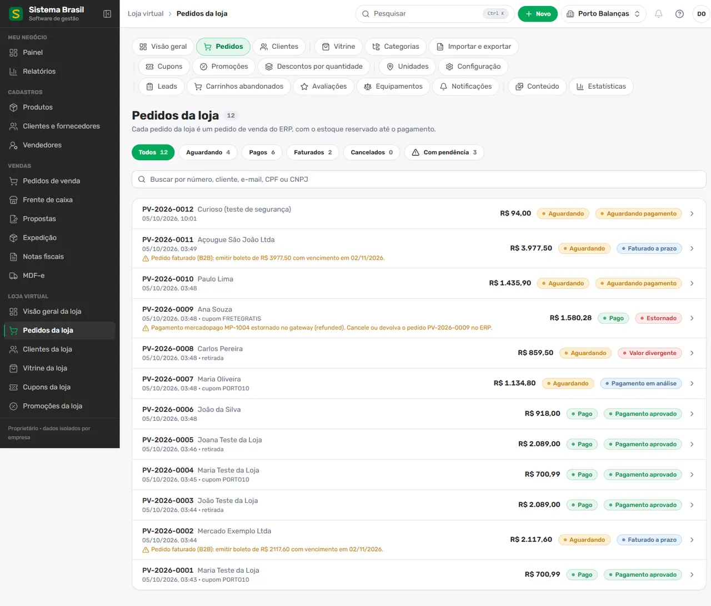
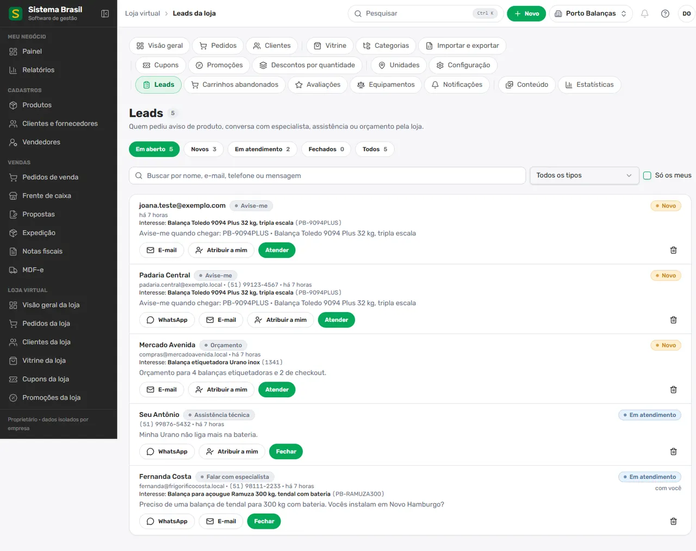
06 · Para aprovar
As fotos e os produtos desta prévia são de exemplo. Com os itens ao lado, trocamos pelo catálogo real e publicamos em portobalancas.com.br.
O visual está aprovado? Algo para mudar? Respondam no grupo que ajustamos antes de cadastrar os produtos.